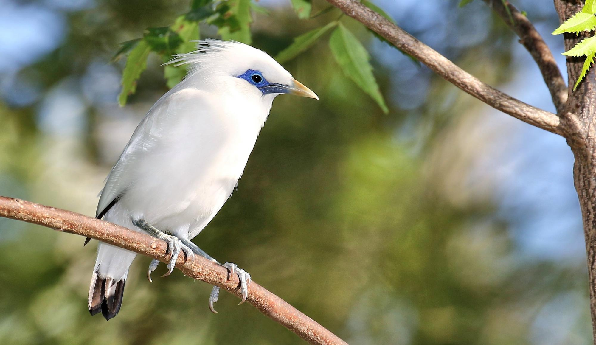
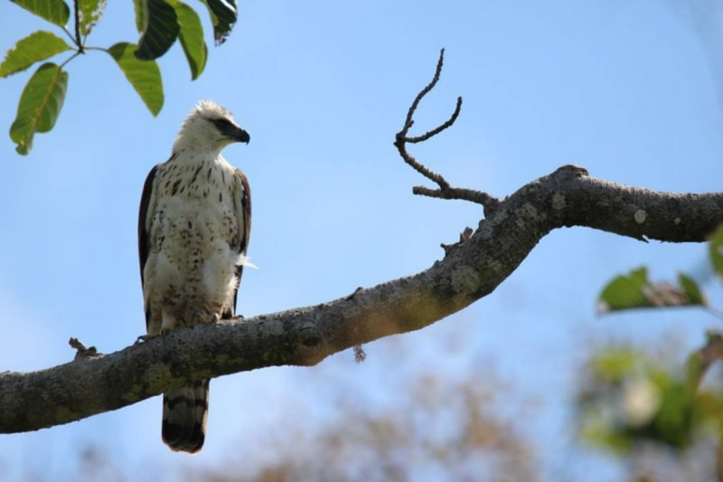
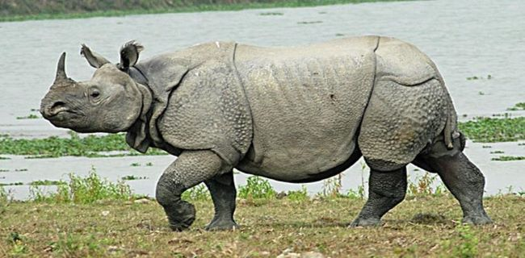

Keanekaragaman hayati di Indonesia menjadi rumah bagi beberapa satwa endemik yang terbatas penyebaranya. Keberadaan
satwa tersebut juga telah menjadi suatu icon yang khas dari daerah tertentu. Sebagai netizen warga
negara Indonesia yang mencintai tanah airnya kita harus ikut melestarikan satwa-satwa tersebut.
Berikut adalah 10 dari sekian banyak hewan endemik khas Indonesia lainnya yang iconic:

Figure Caption 1 - Gambar Burung Jalak Bali
Hewan endemik ini hanya ditemukan di Pulau Dewata yaitu Pulau Bali, tepatnya dibagian barat.
Ciri2 dari Jalak Bali antar lain:
Memiliki bulu berwarna putih
Terdapat corak hitam pada ujung ekor dan sayapnya
Terdapat warna kebiruan di sekitar matanya
Salah satu tempat yang bisa dikunjungi untuk melihat burung ini adalah TNBB (Taman Nasional Bali Barat). Kandungan oksigen (O2)
di
lokasi ini cukup bersih dari
polusi.
Elang Flores

Figure Caption 2 - Gambar Burung Elang Flores
Hewan endemik ini termasuk ke dalam burung pemangsa yang hidup di beberapa daerah, yaitu Flores, Pulau Lombok,
Sumbawa, Pulau Satonda, dan Rinca. Ciri2 dari Elang Flores antara lain:
Memiliki panjang tubuh sekitar 60 hingga 79 cm
Berkepala putih dengan garis-garis coklat kehitaman
Tidak ada perbedaan ciri antara jantan atau betina, dan dewasa atau muda
Salah satu lokasi yang dapat dikunjungi untuk melihat satwa ini adalah TNGR (Taman Nasional Gunung Rinjani). Kandungan oksigen
(O2) di lokasi ini cukup bersih dari polusi.
Badak Bercula Satu

Figure Caption 3 - Badak Bercula Satu
Hewan endemik ini termasuk ke dalam mamalia yang hanya dapat ditemukan di ujung pulau Jawa bagian Barat.
Ciri2 dari Badak Bercula Satu antara lain:
Memiliki massa badan antara 900 - 2300 kg
Panjang badan 2 - 4 meter dan tinggi 1,7 meter
Berwarna abu-abu dengan tekstur kuli yang tidak rata dan berbintik
Bagian atas bibirnya meruncing untuk mempermudah mengambil ddaun dan ranting
Memiliki satu cula
Salah satu lokasi yang dapat dikunjungi untuk melihat satwa ini adalah TNUK (Taman Nasional Ujung Kulon). Kandungan oksigen
(O2) di lokasi ini cukup bersih dari polusi.
Quotes: Salah satu penyebab kelangkaan satwa adalah rusaknya lingkungan hidup tempat atau habitat asli mereka